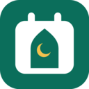

Salah First
الصلاة أولًا
A Google Calendar add-on that blocks the five daily prayers, so meetings are never booked over them.
You choose the margins: for example 5 minutes before the adhan and 35 minutes after. Colleagues, Calendly and Google booking pages then see you as busy at those times, all year round.
Features
- Prayer times for any city, with the major calculation methods or custom angles
- Standard or Hanafi Asr
- Choose which prayers to block, and the minutes before and after the adhan
- A longer slot for Jumu‘ah on Fridays
- Always covers the next 12 months; new months are added automatically
- Main calendar or a separate calendar, your colour, optional reminder
- Only touches the events it creates; “Delete all” removes them in one click
- In English and Arabic
Get started
Install Salah First from the Google Workspace Marketplace, open Google Calendar, then click the Salah First icon in the right-hand side panel. Enter your city, choose your margins and click Save and generate.
Support
Questions or a city that isn't found? Write to contact.swiftomatic@gmail.com.
الصلاة أولًا
Salah First
إضافة لتقويم Google تحجز الصلوات الخمس، حتى لا تُحدَّد أي اجتماعات في أوقاتها.
أنت تختار المدة: مثلًا 5 دقائق قبل الأذان و35 دقيقة بعده. وبذلك يراك زملاؤك وأدوات حجز المواعيد مشغولًا في هذه الأوقات طوال العام.
المزايا
- أوقات الصلاة لأي مدينة، مع أشهر طرق الحساب أو زوايا مخصصة
- حساب العصر على مذهب الجمهور أو المذهب الحنفي
- اختيار الصلوات المراد حجزها وعدد الدقائق قبل الأذان وبعده
- مدة أطول لصلاة الجمعة
- تغطية دائمة للأشهر الاثني عشر القادمة، مع إضافة الأشهر الجديدة تلقائيًا
- التقويم الرئيسي أو تقويم منفصل، مع اختيار اللون وتذكير اختياري
- لا تمسّ إلا الأحداث التي تنشئها، وزر «حذف الكل» يزيلها بنقرة واحدة
- متوفرة بالعربية والإنجليزية
البدء
ثبّت «الصلاة أولًا» من Google Workspace Marketplace، وافتح تقويم Google، ثم اضغط على أيقونة الإضافة في اللوحة الجانبية. أدخل مدينتك واختر المدة ثم اضغط «حفظ وإنشاء».
الدعم
لديك سؤال أو لم يتم العثور على مدينتك؟ راسلنا على contact.swiftomatic@gmail.com.